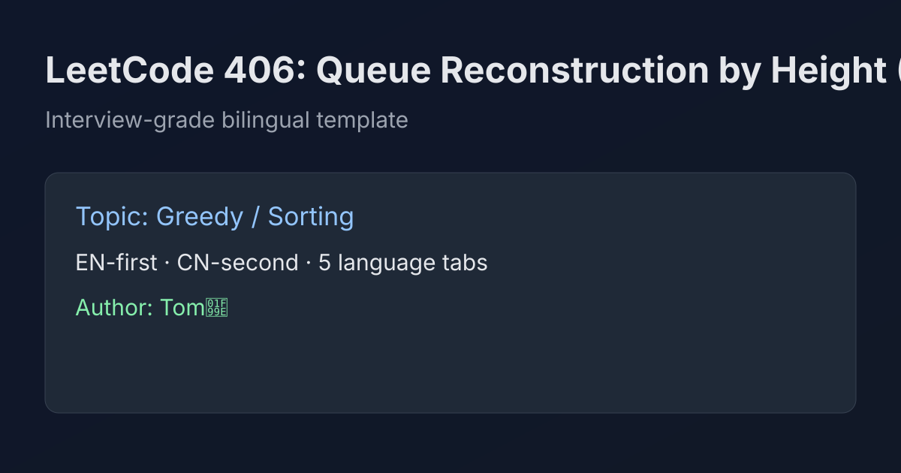

LeetCode 406: Queue Reconstruction by Height (Sort Desc Height + Insert by k)
LeetCode 406GreedySortingToday we solve LeetCode 406 - Queue Reconstruction by Height.
Source: https://leetcode.com/problems/queue-reconstruction-by-height/

English
Problem Summary
Each person is [h, k], where h is height and k is how many people in front have height >= h. Rebuild any valid queue.
Key Insight
Place taller people first. If we process heights from high to low, then when inserting a person at index k, everyone already in the list is tall enough to count, so the condition is naturally satisfied.
Algorithm
- Sort by h descending, and for same h by k ascending.
- Iterate sorted people and insert each person at index k in a dynamic list.
- Convert list to array and return.
Complexity Analysis
Time: O(n^2) (index insertion in array/list).
Space: O(n).
Common Pitfalls
- Sorting equal heights by wrong order (must be k ascending).
- Trying to place short people first, which breaks the counting invariant.
- Forgetting insertion by index and using append only.
Reference Implementations (Java / Go / C++ / Python / JavaScript)
import java.util.*;
class Solution {
public int[][] reconstructQueue(int[][] people) {
Arrays.sort(people, (a, b) -> {
if (a[0] != b[0]) return b[0] - a[0];
return a[1] - b[1];
});
List<int[]> ans = new ArrayList<>();
for (int[] p : people) {
ans.add(p[1], p);
}
return ans.toArray(new int[ans.size()][]);
}
}import "sort"
func reconstructQueue(people [][]int) [][]int {
sort.Slice(people, func(i, j int) bool {
if people[i][0] != people[j][0] {
return people[i][0] > people[j][0]
}
return people[i][1] < people[j][1]
})
ans := make([][]int, 0, len(people))
for _, p := range people {
k := p[1]
ans = append(ans, nil)
copy(ans[k+1:], ans[k:])
ans[k] = p
}
return ans
}class Solution {
public:
vector<vector<int>> reconstructQueue(vector<vector<int>>& people) {
sort(people.begin(), people.end(), [](const vector<int>& a, const vector<int>& b) {
if (a[0] != b[0]) return a[0] > b[0];
return a[1] < b[1];
});
vector<vector<int>> ans;
for (auto& p : people) {
ans.insert(ans.begin() + p[1], p);
}
return ans;
}
};from typing import List
class Solution:
def reconstructQueue(self, people: List[List[int]]) -> List[List[int]]:
people.sort(key=lambda x: (-x[0], x[1]))
ans = []
for p in people:
ans.insert(p[1], p)
return ansvar reconstructQueue = function(people) {
people.sort((a, b) => {
if (a[0] !== b[0]) return b[0] - a[0];
return a[1] - b[1];
});
const ans = [];
for (const p of people) {
ans.splice(p[1], 0, p);
}
return ans;
};中文
题目概述
每个人用 [h, k] 表示，h 是身高，k 是其前面身高 >= h 的人数。要求重建一个满足条件的队列。
核心思路
先放高个子。按身高从高到低处理时，当前列表里的所有人都不会比新插入的人矮，因此把该人插到下标 k 的位置即可保证前面正好有 k 个满足条件的人。
算法步骤
- 按 h 降序排序；若 h 相同则按 k 升序。
- 依次把每个人插入到结果数组下标 k 处。
- 最后返回结果。
复杂度分析
时间复杂度：O(n^2)（中间插入会搬移元素）。
空间复杂度：O(n)。
常见陷阱
- 同身高时排序方向写反（必须 k 升序）。
- 先处理矮个子会破坏不变量。
- 只追加不按下标插入，会得到错误答案。
多语言参考实现（Java / Go / C++ / Python / JavaScript）
import java.util.*;
class Solution {
public int[][] reconstructQueue(int[][] people) {
Arrays.sort(people, (a, b) -> {
if (a[0] != b[0]) return b[0] - a[0];
return a[1] - b[1];
});
List<int[]> ans = new ArrayList<>();
for (int[] p : people) {
ans.add(p[1], p);
}
return ans.toArray(new int[ans.size()][]);
}
}import "sort"
func reconstructQueue(people [][]int) [][]int {
sort.Slice(people, func(i, j int) bool {
if people[i][0] != people[j][0] {
return people[i][0] > people[j][0]
}
return people[i][1] < people[j][1]
})
ans := make([][]int, 0, len(people))
for _, p := range people {
k := p[1]
ans = append(ans, nil)
copy(ans[k+1:], ans[k:])
ans[k] = p
}
return ans
}class Solution {
public:
vector<vector<int>> reconstructQueue(vector<vector<int>>& people) {
sort(people.begin(), people.end(), [](const vector<int>& a, const vector<int>& b) {
if (a[0] != b[0]) return a[0] > b[0];
return a[1] < b[1];
});
vector<vector<int>> ans;
for (auto& p : people) {
ans.insert(ans.begin() + p[1], p);
}
return ans;
}
};from typing import List
class Solution:
def reconstructQueue(self, people: List[List[int]]) -> List[List[int]]:
people.sort(key=lambda x: (-x[0], x[1]))
ans = []
for p in people:
ans.insert(p[1], p)
return ansvar reconstructQueue = function(people) {
people.sort((a, b) => {
if (a[0] !== b[0]) return b[0] - a[0];
return a[1] - b[1];
});
const ans = [];
for (const p of people) {
ans.splice(p[1], 0, p);
}
return ans;
};
Comments